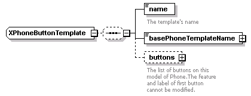
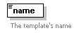
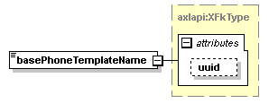
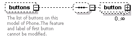
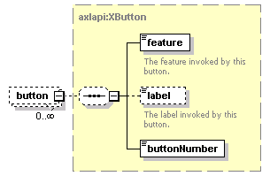

| diagram |  | ||
| namespace | http://www.cisco.com/AXL/API/10.5 | ||
| children | name basePhoneTemplateName buttons | ||
| used by |
|
||
| source | <xsd:complexType name="XPhoneButtonTemplate"> <xsd:sequence minOccurs="0"> <xsd:element name="name" type="xsd:string" nillable="false" minOccurs="1" maxOccurs="1"> <xsd:annotation> <xsd:documentation>The template's name</xsd:documentation> </xsd:annotation> </xsd:element> <xsd:element name="basePhoneTemplateName" type="axlapi:XFkType" minOccurs="1" maxOccurs="1"/> <xsd:element name="buttons" minOccurs="0" maxOccurs="1"> <xsd:annotation> <xsd:documentation>The list of buttons on this model of Phone.The feature and label of first button cannot be modified.</xsd:documentation> </xsd:annotation> <xsd:complexType> <xsd:sequence minOccurs="0"> <xsd:element name="button" type="axlapi:XButton" minOccurs="0" maxOccurs="unbounded"/> </xsd:sequence> </xsd:complexType> </xsd:element> </xsd:sequence> </xsd:complexType> |
| diagram |  | ||||
| type | xsd:string | ||||
| properties |
|
||||
| annotation |
|
||||
| source | <xsd:element name="name" type="xsd:string" nillable="false" minOccurs="1" maxOccurs="1"> <xsd:annotation> <xsd:documentation>The template's name</xsd:documentation> </xsd:annotation> </xsd:element> |
| diagram |  | ||||||||||||
| type | axlapi:XFkType | ||||||||||||
| properties |
|
||||||||||||
| attributes |
|
||||||||||||
| source | <xsd:element name="basePhoneTemplateName" type="axlapi:XFkType" minOccurs="1" maxOccurs="1"/> |
| diagram |  | ||||||
| properties |
|
||||||
| children | button | ||||||
| annotation |
|
||||||
| source | <xsd:element name="buttons" minOccurs="0" maxOccurs="1"> <xsd:annotation> <xsd:documentation>The list of buttons on this model of Phone.The feature and label of first button cannot be modified.</xsd:documentation> </xsd:annotation> <xsd:complexType> <xsd:sequence minOccurs="0"> <xsd:element name="button" type="axlapi:XButton" minOccurs="0" maxOccurs="unbounded"/> </xsd:sequence> </xsd:complexType> </xsd:element> |
| diagram |  | ||||||
| type | axlapi:XButton | ||||||
| properties |
|
||||||
| children | feature label buttonNumber | ||||||
| source | <xsd:element name="button" type="axlapi:XButton" minOccurs="0" maxOccurs="unbounded"/> |